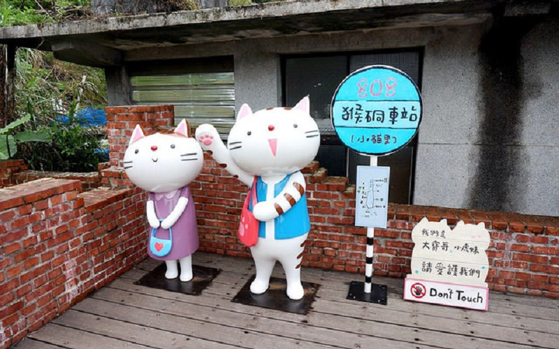
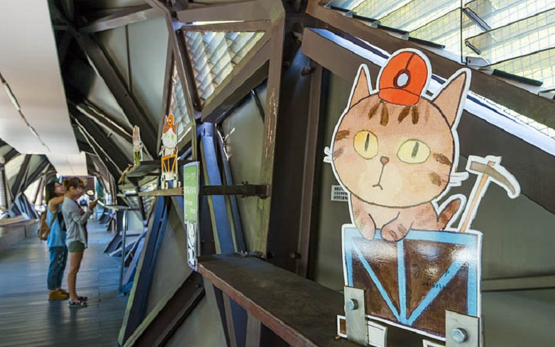
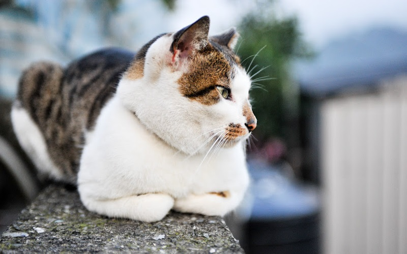
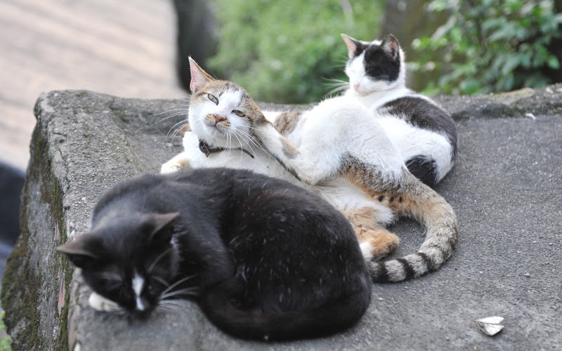

Houtong Cat Village
New Taipei City
Houtong Cat Village
   The Houtong Cat Village or Houdong Cat Village is a village in Ruifang District, New Taipei. It was one selected as
one of the best spot to see cats by CNN. Strolling at the street, you will find that there are many cats on the street
which are not afraid of people. There are also many cafe and shops that feature cats. This is definately a desiring
place for cat lovers!
- Best seasons: all year around
- Transportation:
The village is accessible from Houtong Station of Taiwan Railways Administration.